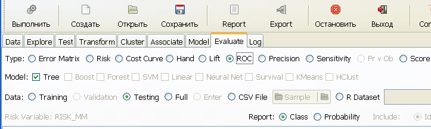
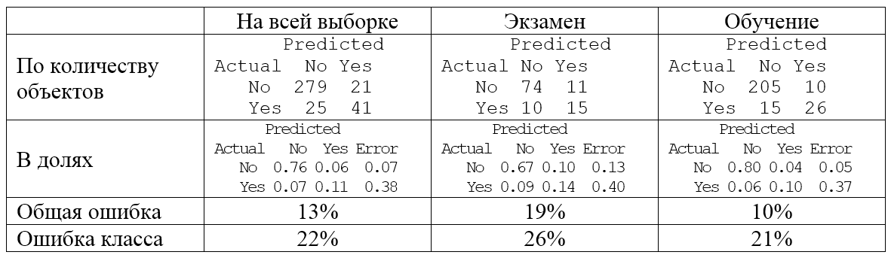
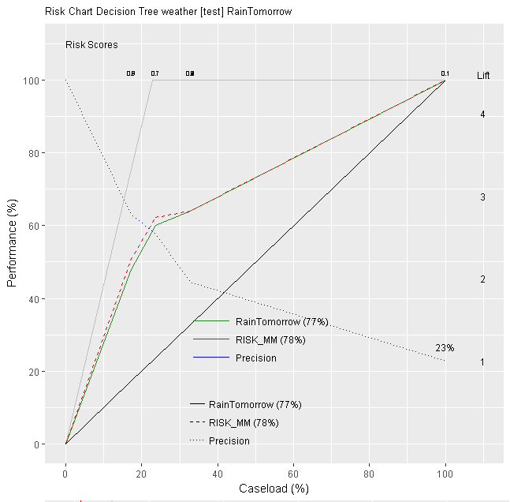
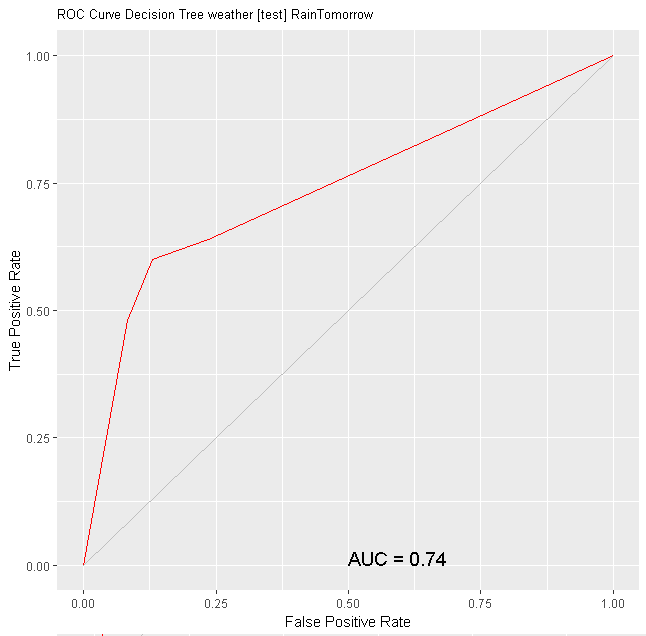
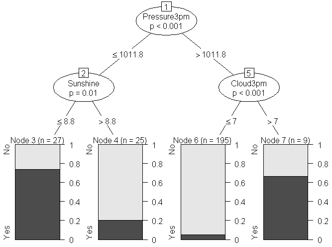
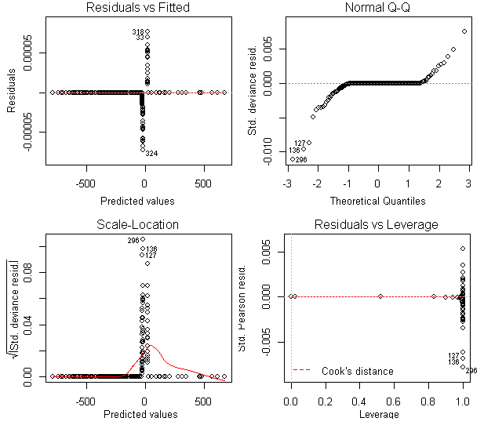

11.3 Построение и тестирование моделей классификации
С использованием интерактивной оболочки rattle можно построить шесть моделей классификации (вкладка Model), подробно описанных нами в главах 3-8: деревья решений (Tree), случайные леса и бустинг (Forrest и Boost), машину опорных векторов (SVM), линейную модель (Linear) и нейронную сеть (Neural Net).
Для построения моделей разделим всю выборку на две части - обучающую и тестовую - в соотношении 70/30, т.е. отдельно проверочную выборку выделять не будем. Также заблокируем сопутствующие переменные Date и Location.
Начнем с построения традиционных деревьев рекурсивного разделения rpart и построим модель прогнозирования дождя на следующий день RainTomorrow с использованием параметров, принятых по умолчанию:

Построенное дерево основано на трех переменных из 20: облачности (Cloud3pm), атмосферном давлении в 15:00 ч (Pressure3pm), а также количества часов яркого света за день (Sunshine).
Для оценки эффективности модели переходим во вкладку Evaluate:

Построенную модель мы можем оценить по 9 группам показателей. Кроме того, тестирование можно выполнить как по всей выборке (Full), так и отдельно по обучающей (Training) и экзаменационной (Testing) последовательностям.
Матрица неточностей (Error Matrix) является наиболее общим результатом выполненного анализа:

Другой подход к оценке эффективности бинарного классификатора заключается в построении кумулятивной версии ROC-кривой - диаграммы риска (risk chart), также известной как диаграмма полезности (gain).
Summary Decision Tree model (rpart) on weather [test]
by probability cutoffs.
Recall Risk Caseload Precision Measure
0.0512820512821 1.00 1.0000000 1.0000000 0.2272727 0.0000000
0.2 0.64 0.6391960 0.3272727 0.4444444 0.6246505
0.6666666666667 0.60 0.6221106 0.2363636 0.5769231 0.7493833
0.7407407407407 0.48 0.5075377 0.1727273 0.6315789 0.6420831
1.0 0.00 0.0000000 0.0000000 1.0000000 0.0000000
Area under the Recall (green) curve: 77% (0.771)
Area under the Risk (red) curve: 78% (0.777)
Для построения диаграмм риска, как правило, используются дополнительно контрольные наборы данных (audit dataset). Так, для таблицы weather в обучении любой модели классификации могут участвовать две переменные: бинарный отклик RainTomorrow и переменная риска RISK_MM, связанная с мерой вероятности наступления прогнозируемого события, оцененная аудитом для каждого наблюдения.
Наблюдения упорядочивают по убыванию предсказанных для них оценок риска RISK_MM и на оси абсцисс диаграммы последовательно откладывают доля наблюдений (Case load, %), а по оси ординат - доля удачных прогнозов (Perfomance) на основании построенной модели. Линия главной диагонали не связана с какой-либо моделью прогнозирования, т.е. для 50% наблюдений случайное угадывание окажется верным лишь в 50% случаев. Если использовать предсказанные деревом решений вероятности предстоящего дождя, то мы получим уже 73% случаев верного прогноза. Сканируя долю наблюдений от 0 до 100%, можно получить также сглаженную диаграмму изменения риска RISK_MM (показана красной пунктирной линией). Пунктирная синяя линия указывает на графике изменение специфичности (precision). Подробности анализа диаграмм риска и других показателей эффективности моделей представлены в монографии по rattle (Williams, 2009, 2011).
Для оценки традиционной AUC можно построить ROC-кривую (ROC) и рассчитать такие критерии, как энтропия H и индекс Джини Gini:
H=0.302928, Gini=0.475765, AUC=0.737882,AUCH=0.741647, KS=0.470588
Точность остальных шести моделей прогнозирования оценивается по тому же принципу и столь подробно далее рассматриваться не будет. Мы приведем только основные характеристики построенных моделей, AUC и точность классификации на тестовой выборке, а в некоторых случаях также информацию о наиболее важных предикторах.
Деревья условного вывода (Сonditional Trees):
Conditional inference tree with 4 terminal no1des
Area under ROC curve for ctree model on weather [test] is 0.7379
Overall error: 19%, Averaged class error: 26%
Модель случайного леса (Random Forrest):
No. of variables tried at each split: 4
OOB estimate of error rate: 14.45%
Area under ROC curve for rf model on weather [test] is 0.9009
Overall error: 11%, Averaged class error: 22%
Variable Importance
No Yes MeanDecreaseAccuracy MeanDecreaseGini
Pressure3pm 12.53 10.96 15.42 5.45
Cloud3pm 13.40 9.38 15.10 3.26
Sunshine 13.10 7.59 14.40 4.16
WindGustSpeed 10.17 6.71 11.90 2.94
MaxTemp 9.10 -0.97Модель бустинга (Ada Boost):
Loss: exponential Method: discrete Iteration: 50
Train Error: 0.047
Out-Of-Bag Error: 0.07 iteration= 37
Area under the ROC curve for ada model on weather [test] is 0.8593
Overall error: 15%, Averaged class error: 20%
Frequency of variables actually used:
Sunshine Pressure3pm Cloud3pm Temp3pm WindGustSpeed
32 28 17 13 13Модель опорных векторов (Support Vector Machine):
SV type: C-svc (classification) parameter : cost C = 1
Gaussian Radial Basis kernel function.
Hyperparameter : sigma = 0.0379412611254591
Number of Support Vectors : 107
Objective Function Value : -59.5602
Training error : 0.100877
Area under ROC curve for ksvm model on weather[test] is 0.9248
Overall error: 18%, Averaged class error: 38%Модель логистической регрессии::
Model: binomial, link: logit Response: RainTomorrow
Area under ROC curve for the glm model on weather [test] is 0.6597
Overall error: 29%, Averaged class error: 34%
Analysis of Deviance Table
Df Deviance Resid. Df Resid. Dev Pr(>Chi)
NULL 227 205.456
MinTemp 1 14.151 226 191.305 0.0001688 ***
MaxTemp 1 2.131 225 189.175 0.1443620
Rainfall 1 0.022 224 189.152 0.8811792
Evaporation 1 0.012 223 189.141 0.9143115
Sunshine 1 25.223 222 163.918 0.0000005108 ***
WindGustDir 15 41.721 207 122.197 0.0002481 ***
WindGustSpeed 1 7.516 206 114.681 0.0061156 **
WindDir9am 15 19.016 191 95.665 0.2130107
... ...
Pressure9am 1 6.431 171 71.042 0.0112151 *
Pressure3pm 1 71.042 170 0.000 < 2.2e-16 ***
... ...
RainToday 1 0.000 165 0.000 0.9998435Нейронная сеть прямого распространения:
Summary of the Neural Net model (built using nnet):
A 62-10-1 network with 703 weights.
Sum of Squares Residuals: 0.0017.
Area under ROC curve for nnet model on weather [test] is 0.6766
Overall error: 25%, Averaged class error: 32%При иных формах представления отклика (в метрической или счетной шкале) возможно также построение обычной или обобщенной модели на основе распределений Гаусса или Пуассона, а также логит- или пробит-моделей для откликов с несколькими классами.